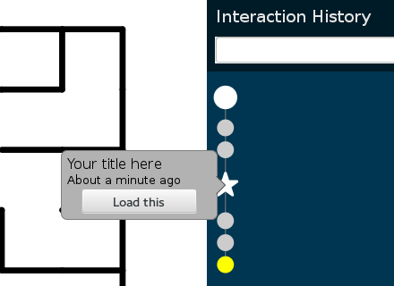
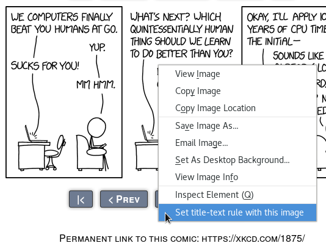

Here are some things I’ve made in which UX was an important part of the project.
My MCS thesis was based on this project. The focus was on the usability evaluation user study I ran, so the design shown here is only what I tested — I learned a lot and would make some significant revisions, which you can read in the thesis (skip to section 5.8 and chapter 6).
What would happen if we could give tools like Git to users of web apps? In particular, could we support the kind of exploratory “have fun with this data” app that’s becoming more common with better data processing and touchscreens and other new interaction media?
I wrote a JavaScript library that hooks into a web application. It provides the blue sidebar in the page that automatically tracks changes in application state and lets the user jump arbitrarily to any node in the tree. Making changes while the current node is not a leaf node starts a new branch. Thus, all states the application has been in are saved.
Ra is a library that runs in the context of the app mostly to make the implementation easier. Taking snapshots from the level of the JavaScript virtual machine would have been a technically interesting approach, but I wasn't prepared to try to rewrite parts of the JavaScript interpreter!
The interaction history tree is in a sidebar because I wanted to make it seem quite separate from the application, both to the end user and to the application developer. (One of my conclusions after the study was that this should change: the sidebar is distracting when you don’t need it.)
Ra automatically saves states, and a major goal is to enable fearless exploration, so those states are immutable and the tree of states is append-only. So “manipulating history” is not something Ra supports, though the user study suggests more control over the view is needed.
Users don't always know in advance when they will want to refer back to some state, but for when they do, Ra can make special star nodes in the tree with custom labels.
For browsing the history tree, each node has a pop-up balloon that appears on hover (for mouse operations) or tap (for touchscreen operations). The nodes are fairly large because the study was run on a large wall-mounted touchscreen. For the mouse hovering case, the actual hit target for moving the mouse off is invisibly larger than for moving the mouse on, so it's harder to accidentally dismiss the balloon while trying to use it. The balloons give the node's creation time and a summary if one is available (such as when the user explicitly created a starred node), though these features turned out to be less useful for the tasks I tested.
I conducted a usability evaluation in which participants used a couple of demo applications for a series of tasks. The first few tasks were mostly to introduce features and let them get comfortable using the software (and hardware). The later tasks were intended to elicit exploratory behaviour without being too complicated, since I had to keep the study time to a reasonable time limit. The more successful task was a large maze with multiple targets and multiple paths through the maze.
After working with the system, participants filled out a short questionnaire. But most of the valuable data came from observations of what they tried to do, or wasted time on, while working with the system and chatting with me (as I'd asked them to “think aloud”). As mentioned above, chapter 6 in my thesis is all about conclusions and what I would change.
Many years ago, I had written a simple batch rename tool which my mother used as part of her photo-filing workflow. Since that tool didn’t work with Windows 10, I took it as an opportunity to do a better job. The key was that she didn’t need a generic batch rename tool: she needed a tool specifically for renaming photos.
Photo filenames end with the sequence number from the camera, preceded by a letter indicating which camera, and begin with text that is usually but not always the same as the “Title” metadata field. Since it’s a digital camera and taking pictures is almost free, there are usually quite a lot of variations on the same shot.
The screenshots here were taken under GNOME with some testing data, but thanks to GTK themes, the window looks quite natural under Windows.
If the photo has a “Title” metadata field, that gets filled in as the default base name. (The suffix can be seen on the right, but it can’t be changed. That’s a feature, since it maintains the filename pattern.)
Photos are grouped together automatically by the default base name. In most cases the default name is the one that gets used, so this is mostly a review step. The cases I’ve observed where the default name is not used are all about choosing between English and scientific names, so the grouping is valid and helpful.
The left side shows the photos being renamed, if there are only two, or the number in the group and the two that do fit. I’ve seen her do on the order of 100 at a time, so showing all the photos would be impractical, but having a couple of thumbnails provides some limited confirmation that it’s the right photos being renamed.
The tool can be run with files already selected (e.g. from the context menu or from dragging files to the application icon), in which case it loads the main screen. But with several file manager windows open that can be inconvenient, so dragging files to the main window is also supported. This also neatly solves the problem of what to do if you accidentally try to run it without photos to rename.
Not all filenames are valid, unfortunately. And some are just surprising,
like accidentally having two spaces. Some perfectly reasonable photo titles
fall afoul of Windows’ filename restrictions (like disallowing
&).
Warnings and errors that can be detected in advance are shown with a GTK info bar that slides down a few hundred milliseconds after typing a problematic name. The delay helps avoid warning bounce while typing, but if you press the Rename button before the warning has popped up, it will bring up the warning instead.
Since you don’t have to resolve warnings right away, several could build up on different rows. And when you first load a batch of photos, there could be multiple titles that are problematic as filenames. The info bar can only show one at a time, and in the initial load case the problem might not be obvious, so there is a warning marker added to each row with problems so there's no doubt about where to fix it.
pst process viewerThis is a command-line process tree viewer that exists mostly because I kept
adding to a Bash alias ps -eHf and then piping it to
grep. I wrote it in Rust for speed (especially startup speed)
because while the previous version was Python and I like Python, running this
command happens most often on heavily loaded systems where performance makes a
noticeable difference.
I mostly use process listings to look for a single process, and use the
process ancestry tree for context (e.g. to check whether it’s the one I want).
So with no options, the command gives a process tree. Extra information
columns like username are added as space permits, so even easier than
remembering -d for ‘show more details’ is just maximizing the
terminal window.
And I'm often looking for something in particular, though its name may not be unique — try searching for a runaway Python process. So non-flag arguments are treated as queries and cause matching lines to be highlighted.
This extension for Firefox started off as a little custom thing just for me, partly as a way to explore the new WebExtensions API. It just puts the title-text below comics so you don't have to hover. The list of comics was hard-coded. When I decided to publish the extension for general use, a customizable list of rules was clearly needed, and I don't want to ship a set of comics recognized by default.
The extension doesn't actually add any title-text by default, which is not a good user experience. To make up for that, the initial state instead adds a context menu entry (shown below). This makes setting up the configuration easier, but it also makes it obvious that the extension is doing something after you install it and shows what you have to do to make it work.
The extension is published on addons.mozilla.org as Show comic title-text.
I offered to make a web page for a choir I sing with, especially so I could tell people not on Facebook where to get concert information. The choir has decided not to pursue it, but I still have the initial version I wanted to put up. Its main purpose is to provide information about what was then an upcoming concert, so I put that up front.
The page is still live on the test site rctest.petersimonyi.ca